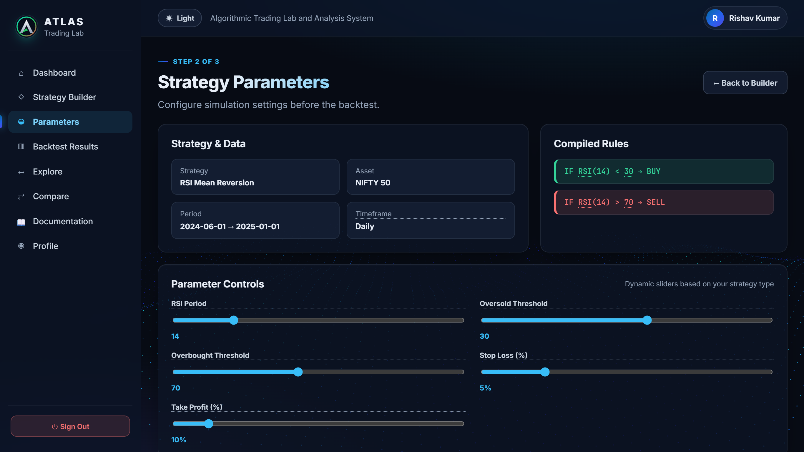
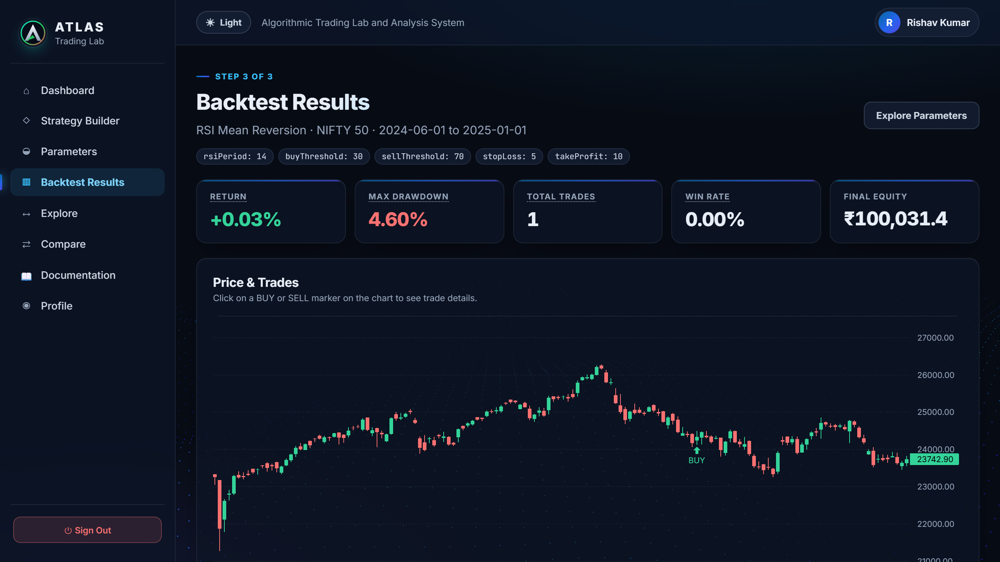

ATLAS — Algorithmic Trading Lab and Analysis System — is a human-centered web app on top of the QuantConnect LEAN engine.
One connected flow replaces scattered tools: Create → Configure → Backtest → Explore → Compare → Understand.
Course project, AI511 – HCI & Visualization, School of AI & Data Engineering, IIT Ropar.
Code
github.com/rishavrai563/A.T.L.A.S.
Algorithmic trading platforms are powerful, but users juggle code, charts, parameters and metrics across disconnected screens.
The result: people can run a backtest, yet struggle to see why a result changed or which configuration produced it.
Our Lab 7 study confirmed it — a gap between performing an action and understanding its consequences.
Personas: beginner trader · quant student · quant researcher · strategy analyst.


Largest gain: parameter effects (Q5) +1.2. Two different user groups — a descriptive comparison, not proof of cause. Status per the Lab 9 implementation guide.